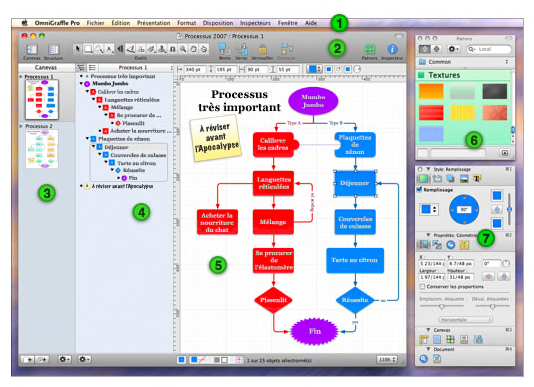

Présentation de l’interface

 Barre de menus. Comme dans toute application Mac OS X, il s’agit de l’emplacement dans lequel vous pouvez accéder à toutes les variétés de commandes.
Barre de menus. Comme dans toute application Mac OS X, il s’agit de l’emplacement dans lequel vous pouvez accéder à toutes les variétés de commandes.  La barre d’outils fournit un accès aisé aux contrôles de votre choix. Sélectionnez Personnaliser la barre d’outils dans le menu Présentation pour trier vos outils favoris sur la barre d’outils. La barre d’outils est surtout le point de départ de la palette d’outils que vous utilisez pour créer des schémas. La barre d’outils peut être affichée et masquée à l’aide du bouton blanc à droite de la barre de titre.
La barre d’outils fournit un accès aisé aux contrôles de votre choix. Sélectionnez Personnaliser la barre d’outils dans le menu Présentation pour trier vos outils favoris sur la barre d’outils. La barre d’outils est surtout le point de départ de la palette d’outils que vous utilisez pour créer des schémas. La barre d’outils peut être affichée et masquée à l’aide du bouton blanc à droite de la barre de titre.  La barre latérale Canevas affiche tous les canevas de votre document et les calques qu’ils contiennent. Vous pouvez cliquer sur un canevas pour l’utiliser dans la présentation principale du canevas.
La barre latérale Canevas affiche tous les canevas de votre document et les calques qu’ils contiennent. Vous pouvez cliquer sur un canevas pour l’utiliser dans la présentation principale du canevas.  La barre latérale Structure offre une présentation textuelle hiérarchique du schéma sur les canevas sélectionnés. Elle offre un excellent moyen pour créer rapidement de nombreux objets, les interconnecter et réarranger leur structure. Vous pouvez également passer à la barre latérale Liste qui affiche l’ordre (d’avant en arrière) de chaque objet sur chaque calque du canevas sélectionné.
La barre latérale Structure offre une présentation textuelle hiérarchique du schéma sur les canevas sélectionnés. Elle offre un excellent moyen pour créer rapidement de nombreux objets, les interconnecter et réarranger leur structure. Vous pouvez également passer à la barre latérale Liste qui affiche l’ordre (d’avant en arrière) de chaque objet sur chaque calque du canevas sélectionné.  La présentation du canevas est l’emplacement dans lequel votre dessin s’effectue. Vous pouvez utiliser les outils de traçage pour créer des formes et les interconnecter par des traits. Vous pouvez faire glisser des objets, les regrouper, créer des tableaux et aller bien au-delà de ce qui est indiqué dans cette vue d’ensemble.
La présentation du canevas est l’emplacement dans lequel votre dessin s’effectue. Vous pouvez utiliser les outils de traçage pour créer des formes et les interconnecter par des traits. Vous pouvez faire glisser des objets, les regrouper, créer des tableaux et aller bien au-delà de ce qui est indiqué dans cette vue d’ensemble.  La fenêtre des patrons contient de nombreux objets préconçus pour des buts très variés. OmniGraffle est fourni avec plusieurs patrons utiles et vous pouvez même utiliser Graffletopia, un excellent centre de stockage géré par des tiers, pour rechercher des patrons créés par des utilisateurs d’OmniGraffle.
La fenêtre des patrons contient de nombreux objets préconçus pour des buts très variés. OmniGraffle est fourni avec plusieurs patrons utiles et vous pouvez même utiliser Graffletopia, un excellent centre de stockage géré par des tiers, pour rechercher des patrons créés par des utilisateurs d’OmniGraffle.  Les inspecteurs contiennent tous les contrôles dont vous avez besoin pour modifier les objets sélectionnés sur le canevas, le canevas lui-même et le document entier. Il existe seize inspecteurs, organisés selon les types d’éléments qu’ils affectent : Style, Propriétés, Canevas et Document.
Les inspecteurs contiennent tous les contrôles dont vous avez besoin pour modifier les objets sélectionnés sur le canevas, le canevas lui-même et le document entier. Il existe seize inspecteurs, organisés selon les types d’éléments qu’ils affectent : Style, Propriétés, Canevas et Document.